Smart Tools Manager
Find the data blocking a release cleanup
In the example a script text remains. Release cleanup shows one blocker and its name, pointing to the item to inspect before cleaning a copy.
SmartTools
Version 1.0.0 / Blender 5.1.0 or later / 23 add-ons
A collection of 23 Blender add-ons that help with modeling, UVs, materials, painting, rigging, animation, camera work and interface management. Download a ZIP, install it in Blender, and use each add-on with its manual.
Choose by taskTroubleshootingDownloadsInstallationRead the Overall Specification
Each image shows the Blender controls you will use first. Select an image for directions and landmarks, or choose “See the worked example” for screenshots of the operation and its result.
A tool for managing SmartTools as a whole. It lets you decide, on a single screen, which editors show the other add-ons’ panels (Overall Specification, Chapter 6).
Find the data blocking a release cleanup
In the example a script text remains. Release cleanup shows one blocker and its name, pointing to the item to inspect before cleaning a copy.
SmartGeometry turns a sketched floor plan into walls. SmartModeling lets you refine an existing model, such as editing one ear and copying the change to a second mesh with matching vertices.
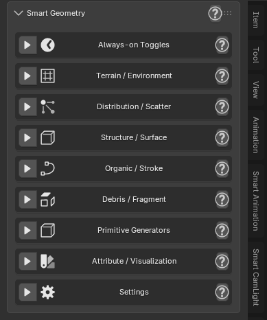
Turn a Grease Pencil floor plan into walls
Convert a Grease Pencil floor plan to wall geometry. The example also closes the gap between the ends of the stroke.
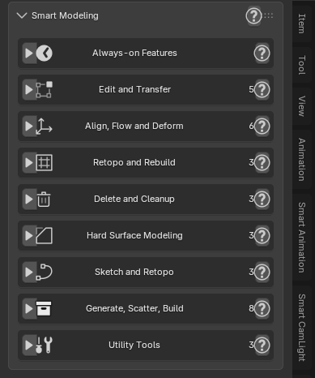
Copy the edited ears to a matching mesh
Edit one model, then paste the vertex positions onto its matching partner. Watch the second pair of ears take the same shape.
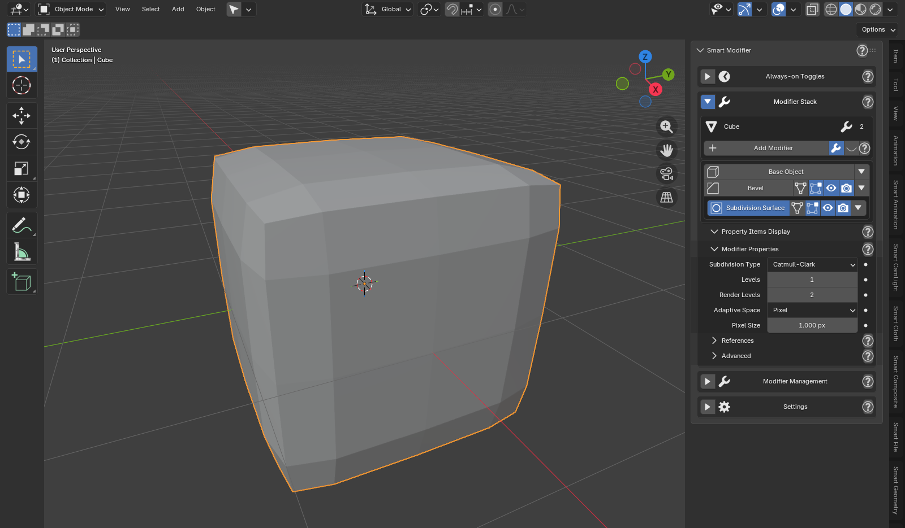
Inspect an intermediate modifier stage
Select the subdivision row to pause the downstream wireframe. Turn automatic disabling off to see the wireframe return.

Recover the saved mesh after a remesh
Inspect the wireframe after a voxel remesh, then restore the saved topology from the snapshot.

Add edit targets while skipping shared mesh data
Add the collection to the edit set. A separate mesh joins; the linked duplicate sharing the original mesh data stays outside the edit set in the example.
Use SmartNode to give nodes consistent names or SmartShader to direct the shadow on a toon material. For render passes needed in a composite, see SmartComposite under Cameras, Rendering & Compositing.
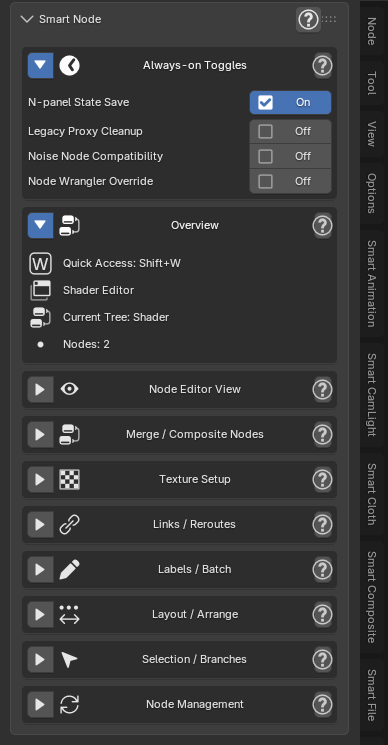
Give selected nodes a numbered naming scheme
Select the Noise and Voronoi nodes and apply a shared name with numbering. The two labels become Mask_01 and Mask_02 for handoff.
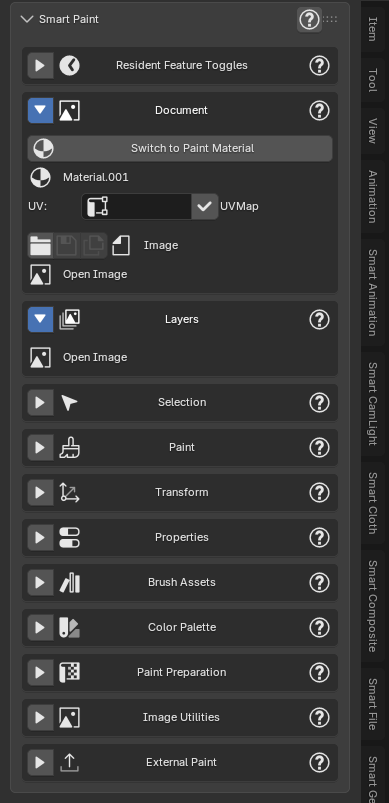
Start with one face and target its UV island
Expand one selected face to its UV island before painting a garment panel. The guide also covers layer display and PSD saving.
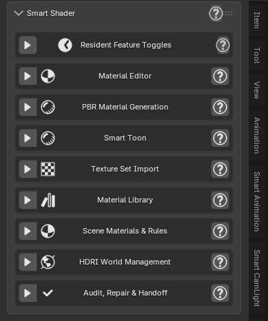
Art-direct a toon shadow with an arrow
Move the arrow Empty left and sync the direction. Compare the shadow on the same toon material before and after.

Keep a restorable seam layout
Save the seam layout in the scene, clear every seam, then restore the marked edges. Try a different cut without losing the reference layout.
Use SmartRig to adjust how a cuff follows a bent wrist, SmartAnimation to blend a saved bow into a pose, or SmartSelector to drive a facial expression from a browser slider.

Blend halfway into a saved bow
Compare a 0.5 blend with the fully applied saved bow. Reuse a pose at different strengths.

Compare bone and cloth motion at frame 16
Switch the same skirt between bone and cloth motion. At frame 16 the waistband follows the body while the simulated hem trails behind.
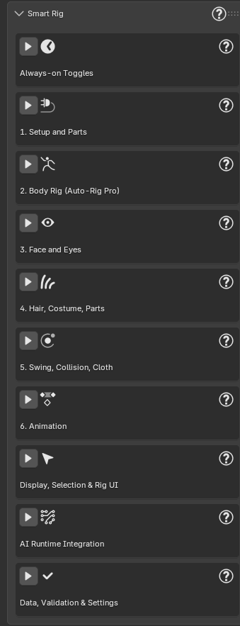
Tune how strongly each cuff follows the wrist
Set the cuff-end influence to 1.0 on one side and 0.4 on the other, then compare both cuffs in the same wrist pose.

Drive a shape key from a browser control panel
The example sends the same command as a picker slider. In Blender, the smile value changes from 0 to 1 and both ears rise.

Bring a saved smile onto a subdivided face
Load an expression map onto the subdivided face, preserve the Basis, then recall the smile. A separate example shows the import stopping after the target UV is scaled by half.
SmartCamLight can keep the face lit while excluding the floor from a light. Use SmartRender to deliver just beauty and alpha, or SmartComposite to enable the view-layer passes a composite needs.
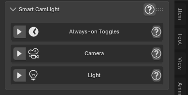
Light the subject and leave the floor dark
Exclude only Floor from the light. The subject stays lit; restoring the checkbox brings the floor light back in the same shot.

Prepare view-layer passes for compositing
Enable automatic render-pass maintenance and inspect the corresponding view-layer pass switches before rendering the composite.
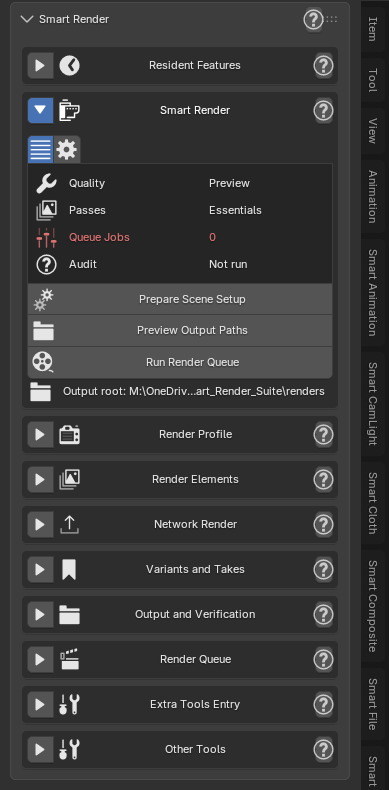
Switch the delivery pass list from six to two
Load the beauty preset. Beauty and alpha remain, and the checklist, selected count and expected elements update together.
SmartWorkspace keeps the same side view across workspaces. SmartOverlay draws occluded edges as dashes. Use SmartFile to recover the shape saved before an edit, or SmartID to check ID usage in the selection and across the file.
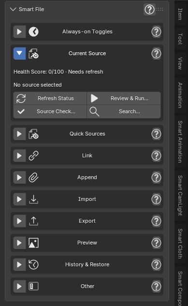
Recover the mesh from a restore point
Create a restore point before editing, remove the upper half of the mesh on a copy, then return to the saved shape.

Check ID usage in the selection and across the file
Refresh the counts after changing the selection. The same ID moves from 1/1 to 0/1, so usage outside the selection remains visible.

Show occluded edges as dashes
Draw the hidden edges as dashes while the visible edges stay solid. Follow the mesh silhouette without mixing up front and back.
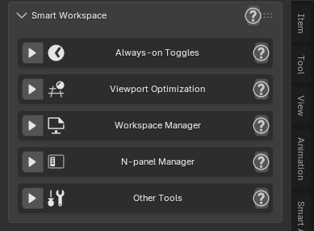
Keep the same view when switching workspaces
Compare the Scripting workspace with sync off and on. With sync on, its 3D view follows the side view from Layout.
A tool bundled with SmartTools.

See which two bindings take priority over F2
Inspect the two higher-priority bindings. In the example, enabling the target disables those two entries, making the trade-off visible.
Install the ZIP in Blender as it is, without extracting it (Installation).
| Add-on | File | Size | SHA-256 |
|---|---|---|---|
| Smart Tools Manager | SmartToolsManager_1.0.0.zip | 82 KB | faf26738bdb1ceb19126c3eb6349cdfb5de3021a0036311543a6d5e0df9288a4 |
| SmartGeometry Suite | SmartGeometrySuite_1.0.0.zip | 676 KB | 1508f6be220e9991c1b2da028cd0955aa4195782ef6cc58fd3c8d7b69a822ad4 |
| SmartModeling Suite | SmartModelingSuite_1.0.0.zip | 3,050 KB | 007ef7d6095124a7e6c4a67ca027c8ae2ce36cd33707aa48cc397c03ee8b807f |
| SmartModifier Suite | SmartModifierSuite_1.0.0.zip | 1,569 KB | c03e751eb491a0a9a40a38b47248503a9de127067ef3a497b99a9bdf92d899fb |
| SmartSculpt Suite | SmartSculptSuite_1.0.0.zip | 10,772 KB | 55c29a894ef7c89c5f7c5c2d7ddd8bcf5c937aa1e16cd90309e29260ca2cb42c |
| SmartTransform Suite | SmartTransformSuite_1.0.0.zip | 650 KB | 530cc66b9e26b677248526712c3ebf6486861273069b570a635906e6561df6d3 |
| SmartNode Suite | SmartNodeSuite_1.0.0.zip | 398 KB | 03e397530ffe03b8868fb366ab944588f39b1a4a3d724975105074d8833e93d7 |
| SmartPaint Suite | SmartPaintSuite_1.0.0.zip | 954 KB | 2d2fc5d38cea71c2901f4b41ce4fb6e7c332579934ff5551c455697d3d2da521 |
| SmartShader Suite | SmartShaderSuite_1.0.0.zip | 11,425 KB | b1ffa15b540a4a20380da291fbf09135291e2db297f9048fd6309de3b7ceb1e8 |
| SmartUV Suite | SmartUVSuite_1.0.0.zip | 4,162 KB | 74396b75ce8b952160701a1ae70fa530faf026decb7eb53c2f75b480837f3d56 |
| SmartAnimation Suite | SmartAnimationSuite_1.0.0.zip | 1,080 KB | 61ef4ebf18be584d519717b8f43f2debc5d5b91e535598b6b7fa7efec139e6d6 |
| SmartCloth Suite | SmartClothSuite_1.0.0.zip | 265 KB | da7ceb56fa8e0afec8f038c9cd612246007ab7d0f22c034e618266d8ce555162 |
| SmartRig Suite | SmartRigSuite_1.0.0.zip | 710 KB | c0dfbf66ee5ea5c24cc1d0353fe05cbca92a7c42ce9eb35595b11f851e2b60bb |
| SmartSelector Suite | SmartSelectorSuite_1.0.0.zip | 497 KB | 4fd5da58dd243783ccdb6a5a2dad2c89688840609e871d507fe448610ec1fe32 |
| SmartShapekey Suite | SmartShapekeySuite_1.0.0.zip | 4,148 KB | 7d8e3a241b8fd5a21592a9dfe7fc229be2896ace2fde76f5bfb180e3f2f9eeae |
| SmartCamLight Suite | SmartCamLightSuite_1.0.0.zip | 116 KB | 199d0564ccb6b4fbe4aa150b7fb5f7f73c1ca9e7be6bf15d148a0487a0713981 |
| SmartComposite Suite | SmartCompositeSuite_1.0.0.zip | 2,607 KB | 30eb694462b766d89c145ae11f39197aeb16fab851a2d41023d5bb1dbe49a69e |
| SmartRender Suite | SmartRenderSuite_1.0.0.zip | 757 KB | f73a74d5fb2224a2e6e401cdca050561b120272f09f8a96408b6e471667e3d67 |
| SmartFile Suite | SmartFileSuite_1.0.0.zip | 4,762 KB | 5cd3498af437d7431ec5f9c455eea9792fb4dedfa21e17e746974535f6826399 |
| SmartID Suite | SmartIDSuite_1.0.0.zip | 123 KB | f337e241b35c625a8b8fc3206c005adde8ab78ca4aaebde2ee0fa58ee03cff80 |
| SmartOverlay Suite | SmartOverlaySuite_1.0.0.zip | 645 KB | 4e915f157b58909b622d08c854ac044cc788898069a8b9f8ef09717675ba1422 |
| SmartWorkspace Suite | SmartWorkspaceSuite_1.0.0.zip | 833 KB | f11576dc71479377cdbf22cc73fbead5a106aebe9b8123d1c2b894339d136c55 |
| Keymap Manager | KeymapManager_1.0.0.zip | 50 KB | 307c265d76a8da5034ec4d6c8c06b6833c6d2f10bb15e6f001db1e79c731cc98 |
https://jelararagi.github.io/SmartTools/downloads/index.json (steps)Install a ZIP · Check activation · Installation troubleshooting
Check activation, then choose “Where to find it” below to identify the editor, mode and panel. Some tools appear only after opening the sidebar or changing tabs.
Match the edition, selection, mode and frame shown in the example. Try a fresh scene or a copy of your file first. These examples use Windows and Blender 5.1.2.
Features that call external add-ons need a separately obtained and enabled copy. For instance, SmartRig does not supply an Auto-Rig Pro license.
Download the free 1.0.0 release again
For a paid store purchase, use the seller or payment contact in the order confirmation or purchase history for access, receipts, duplicate charges or refunds. This documentation site cannot look up orders. Keep order numbers, email addresses and payment information off public GitHub pages.